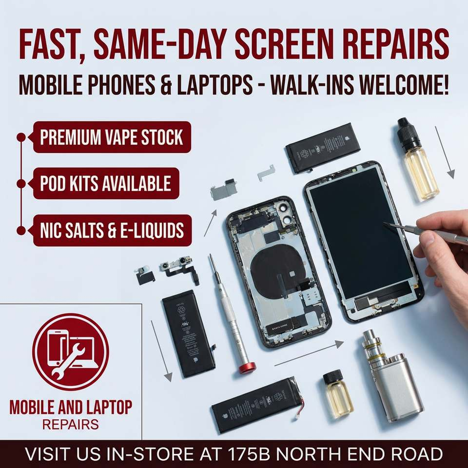
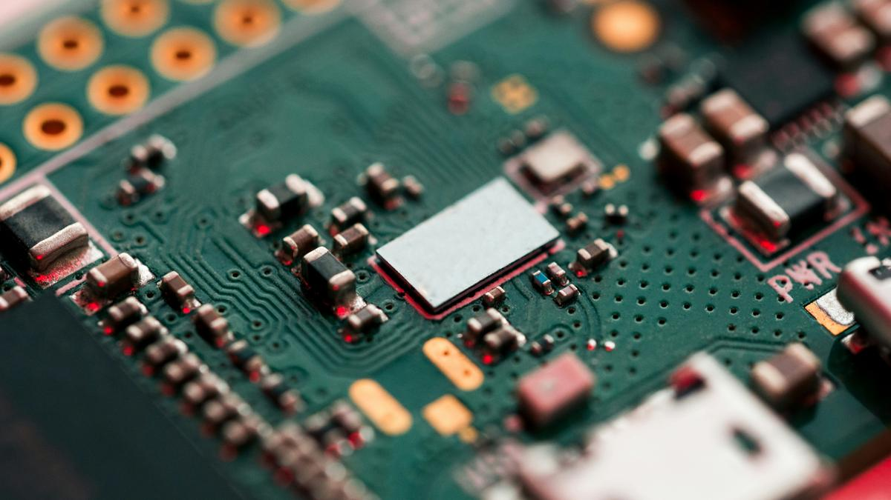
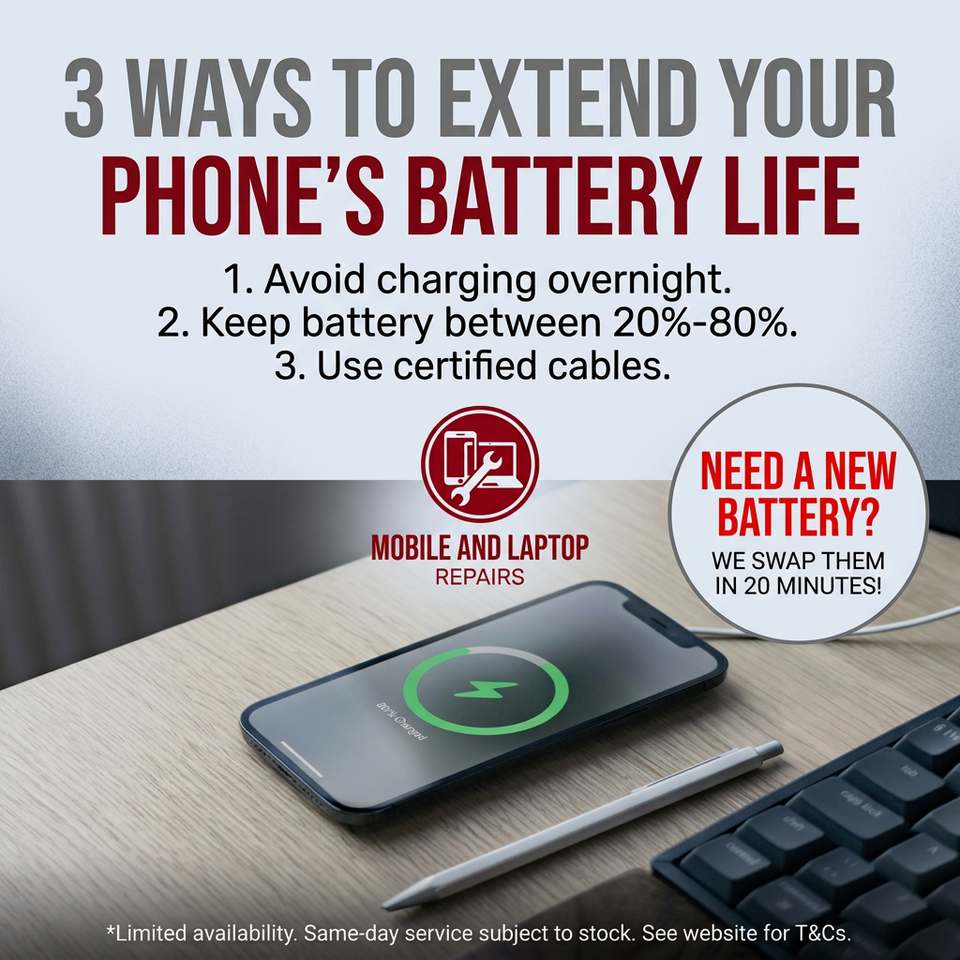
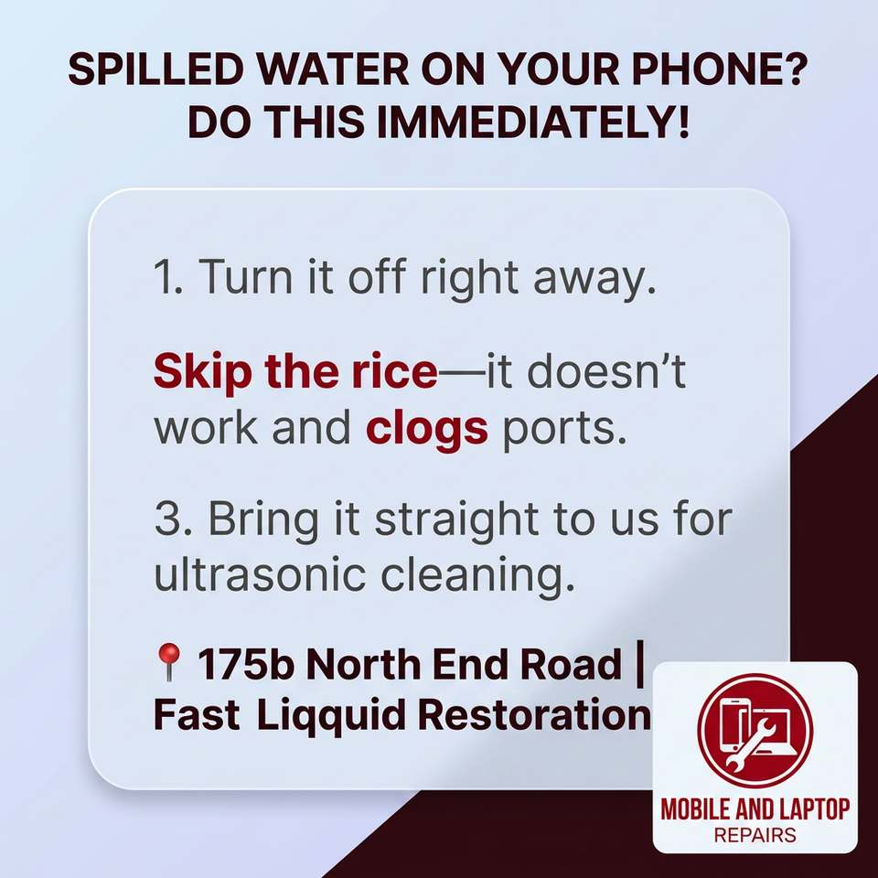

Establishes professional expertise, high-quality genuine parts warranty, and local repair reliability. Designed to position the store as the go-to specialist for premium repairs.

Highlights same-day PS5 & Xbox HDMI repairs and dead laptop motherboard micro-soldering. Differentiates Sabafix from competitors who take 1–2 days, driving high-profit technical jobs.

Features the storefront and exact address to capture locals and high street shoppers. Emphasizes "Top Rated of Service" to communicate long-standing community trust.
Promotes our premium outcall service where the certified technician travels directly to homes and offices. Increases margins by offering unmatched convenience for busy professionals.

Leverages real-life customer reviews and our 4.7-star Google rating to build social proof. Perfect for converting cautious prospects into loyal, lifetime customers.